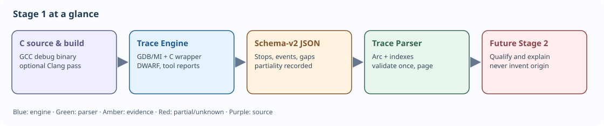

Visual C · Stage 1 #
A field guide to C execution evidence. Stage 1 accepts C source and a build configuration, compiles and observes a bounded primary execution, exports a schema-v2 trace, and provides immutable, validated, trace-scoped evidence to future consumers. This site documents the implemented Trace Engine and Trace Parser. Stage 2's C Semantic Engine is not implemented here.


Choose a route #
- New to the system? Start with the architecture, then the debugger lifecycle, data model, and the API walkthrough.
- Adding an engine feature? Read compilation, variable capture, heap telemetry, and budgets before editing Stage 1.
- Consuming evidence? Read parser ingestion, validation, semantic confidence, bounded pages, and the Stage 2 handoff.
- Looking up a type? Use the public API, schema/identity tables, right-hand page contents, or offline search (
/).
Level 1 · The central idea #
A debugger can say “at this stop, these bytes were readable.” It cannot, by that observation alone, say “this pointer definitely came from allocation 7,” “these bytes were initialized,” or “every child process was observed.” Visual C records both the useful observation and its uncertainty. A consumer should keep addresses separate from identities, and distinguish a structurally sound trace from a complete execution.
Level 2 · What ships #
The Trace Engine uses GCC, GDB/MI2, DWARF and optional Clang syntax; a linked C allocator wrapper records its own events. Valgrind and sanitizers are separate executions. One DebugSessionTrace contains checkpoints, instruction attempts, gaps, heap lifetimes, stage outcomes and reports. The Trace Parser loads the JSON once, builds position-only indexes, and exposes borrowed, validated, explicitly paginated queries. This boundary is deliberate: Stage 1 captures evidence; Stage 2 may later interpret C-language meaning without changing recorded history.
Level 3 · Begin in code #
- Recording entry point:
src/trace.rs::trace_program(TraceConfig); schema:src/models.rs::DebugSessionTrace. - Parser entry point:
src/trace_parser/mod.rs::TraceStore::open; validation:TraceStore::validated_semantic()insemantic.rs. - Stable consumer example:
examples/stage1_public_consumer_audit.rs; runnable introduction in Practical usage.
How to use this site offline #
Open index.html directly in a browser. No network is required. Search, diagrams, themes, code styles, navigation and content are local. The README explains regeneration; every generated page is checked in alongside its Markdown source.